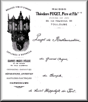

MAISON
Théodore Puget, Père et Fils
FONDÉE EN 1834
56 rue Négreneys, 55
TOULOUSE
Projet de Restauration
du Grand Orgue
du temple
de Saint Hippolyte du Fort.

|  |
Ce document est aussi disponible en version graphique au format TIFF [289 790 octets]. Cliquez sur l'image pour provoquer son téléchargement. |